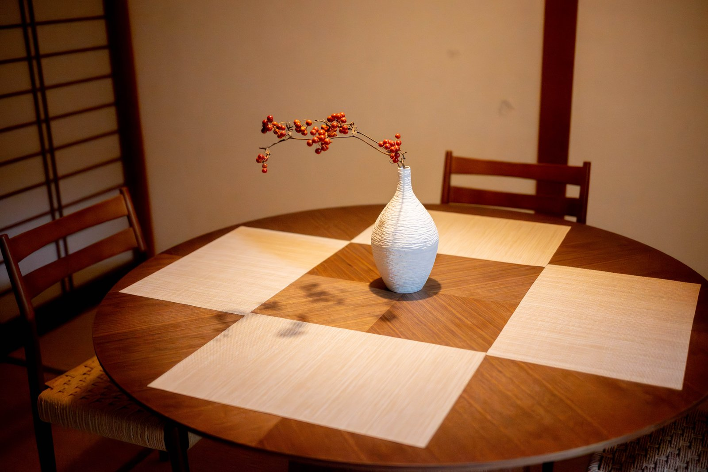

01 / Nomachi

VILLA NO.01 — opened Nov 2024
Nomachi Villa
野町邸 ／ Nomachi, Kanazawa
A two-storey townhouse, quietly restored. Long corridors, paper light through shōji, the steady weight of wood and tatami. Two bedrooms — one Western, one Japanese — with semi-double beds and futons available for families up to six. Ten minutes on foot from the Katamachi nightlife, and quiet enough that you forget it's there.
Size76 m²
Capacity6 guests
Bedrooms2
TypeWhole house